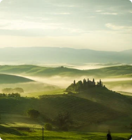

Discover Beauty around the world
As far as we know, our world is unique in the universe, defined by three elements,
Air, Land and Water. Each element has its own special properties and phenomena and
is home to myriad lifeforms that have infiltrated every habitat, from the deepest
oceans to the tiniest nooks and crannies.
Geographical Type
Hills
Hills may form through geomorphic phenomena: faulting,
erosion of larger landforms such as mountains and movement
and deposition of sediment by glaciers (notably
moraines and drumlins or by erosion exposing solid
rock which then weathers down into a hill).
Learn More

Gallery

Hills are landforms that rise above the surrounding
terrain and have relatively
confined summits but are generally understood to be
smaller than mountains.
There is no formal distinction between the two.
Hills may form through geomorphic phenomena:
faulting, erosion of larger landforms such as
mountains and movement and deposition of sediment
by glaciers (notably moraines and drumlins or by
erosion exposing solid rock which then weathers
down into a hill). The rounded peaks
of hills results from the diffusive movement of
soil and regolith covering the hill,
a process known as downhill creep.
Other Geography
Desert
Area of land that receives no more than 25 centimeters (10 inches) of precipitation a year
Canyon
A deep, narrow valley with steep sides
Peninsula
A landform that extends from a mainland and is surrounded by water on most,